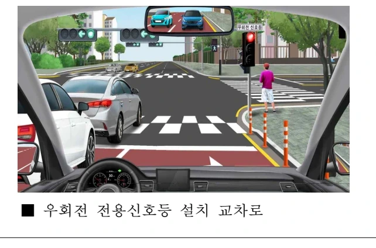

814. 다음 상황에서 우회전하고자 할 때 가장 안전한 운전방법 2가지는?

- ①전방 녹색 진행신호에 따라 신속히 우회전한다.
- ②우측 보행자가 횡단보도를 통행 할 수 있으므로 일시정지 후 안전을 확인하며 우회전한다.
- ③우회전전용신호가 적색이므로 정지한다.
- ④우회전전용신호가 적색이어도 보행자 통행에 방해를 주지 않 는 경우 우회전 가능하다.
- ⑤정지선에 정지하여 우회전 화살표등화로 바뀔 때까지 기다린다.
정답 보기
정답
③ 우회전전용신호가 적색이므로 정지한다.
⑤ 정지선에 정지하여 우회전 화살표등화로 바뀔 때까지 기다린다.
근거·해설
도로교통법 시행규칙 [별표2] 우회전하려는 차마는 우회전 삼색등이 있는 경우 다른 신호등에도 불구하고 이에 따 라야 한다고 명시되어 있다. 우회전 삼색등이 설치되어 있는 교차로의 경우 적색신호에 진행하게 되면 신호위반에 해당하며 우회전 화살표 등화인 경우에만 우회전이 가능하다.